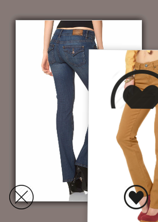

27. Juni 2015

Picture-Swipe
Für die OTTO-InnoDays hat mein Team die Idee “Hot or not for Fashion” umgesetzt und dazu die Otto-Empfehlungsengine umgebaut, einen MicroService für die Datenversorgung erstellt und eine Android-App zum Swipen von Mode-Bildern gebaut. Jetzt möchte ich gerne herausfinden, wie schwer es ist, so einen Swiping-Client in HTML zu bauen.